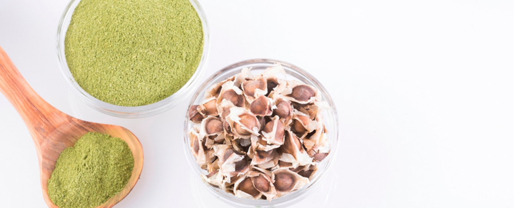
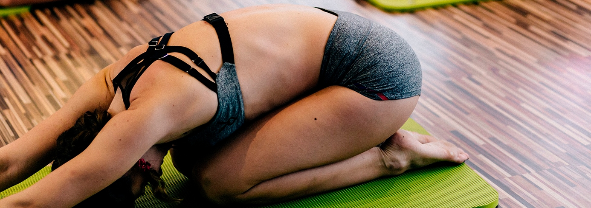

Populárne články

5 wellness trendov, s ktorými sa stretnete v roku 2019
Všetko, čo tento rok potrebujete vedieť o hlavných trendoch, ktoré hýbu svetom krásy, zdravia a fitness. Čítajte ďalej a získajte prehľad o tých najvýznamnejších novinkách v oblasti krásy – od kryštálov na ošetrenie pleti až po produkty intímnej hygieny pre modernú ženu.
Komplexná starostlivosť o zdravie a pohodu
S tým, ako sa naše životy čoraz viac prepájajú, je čoraz jednoduchšie mať celý svet doslova na dosah ruky. Má to však aj svoju odvrátenú stránku: je prakticky (slovná hračka je tu celkom zámerná) nemožné úplne sa odpojiť. Preto neustále hľadáme spôsoby, ako sa zbaviť stresu a opäť nájsť vnútornú rovnováhu. A kde je na to najlepšie miesto? V komplexných wellness centrách, ktoré ponúkajú riešenia pre všetky vaše potreby v oblasti zdravia, celkovej pohody a krásy. Okrem estetických kliník, ktoré okrem špičkových technologických zákrokov poskytujú aj rozmaznávajúce ošetrenia tváre či masáže, sa čoraz častejšie stretnete s miestami, akým je napríklad COMO Shambhala Urban Escape v Singapure. Vďaka širokej ponuke cvičení a procedúr zameraných na fitness, wellness a krásu tu nájdete všetko – od jogy, pilatesu, naturopatie a masáží až po alternatívne liečebné metódy.
Starostlivosť o pleť obohatená o kryštály
Rok 2019 posúva liečenie pomocou kryštálov na úplne novú úroveň – na trhu sa objaví oveľa viac produktov starostlivosti o pleť, ktoré obsahujú kryštály. Hoci sa veľa hovorí o vibračnej energii kryštálov, stále existuje mnoho ľudí, ktorí pochybujú o ich schopnosti odstraňovať negativitu a podporovať pocit celkovej pohody. Ak vám to všetko pripadá až príliš v štýle „new age“, nemusíte sa obávať. Pravdou totiž je, že produkty starostlivosti o pleť s obsahom kryštálov využívajú ich ultrajemné čiastočky – v podstate ide o minerály, ktoré nesú drobné elektrické náboje.
Keď sa zmiešajú s produktmi starostlivosti o pleť a aplikujú na pokožku, môžu povzbudiť pomalú bunkovú aktivitu, upokojiť zápal a zlepšiť krvný obeh. Napríklad Sublime Hydrating Treatment Essence od Nazan Schnapp je tonikum s ružovým kremeňom, ktoré uzamyká hydratáciu, upokojuje pokožku a dodáva jej antioxidanty. Exfoliačný telový krém s drveným amethystom od Herbivore Botanicals kombinuje jemne mletý drahokam s organickým panenským kokosovým olejom a jazmínovým olejom, aby vašu pokožku vyhladil, rozjasnil, vyživil a prevoňal.
Starostlivosť pre ženy
Brazílska depilácia, ustúp! Odvetvie starostlivosti o intímne partie žien, ktoré má v nasledujúcich rokoch rásť tempom viac než sedem percent, zažíva novú éru. Ženy sú totiž čoraz lepšie informované a prejavujú o túto oblasť väčší záujem. Časy, keď sa starostlivosť o intímne partie obmedzovala len na odstraňovanie ochlpenia voskom či pomocou metódy IPL, sú už dávno preč. Dnešná starostlivosť o vagínu a vulvu zahŕňa oveľa viac – od špeciálnych čistiacich prípravkov a produktov na zjednotenie tónu pokožky až po detoxikačné masky. Navyše, keďže bežné hygienické potreby, ako sú vložky, predstavujú významný zdroj odpadu a spotrebiteľky si čoraz viac uvedomujú environmentálne dopady svojho správania, rastie záujem o menštruačné kalíšky či inovácie, akou je napríklad absorpčná spodná bielizeň.
Mäso na rastlinnej báze
Keďže sa čoraz viac ľudí zaujíma o udržateľnosť, je prirodzené, že spoločnosti hľadajú spôsoby, ako znížiť našu uhlíkovú stopu znížením množstva hovädzieho mäsa, ktoré konzumujeme. Koniec koncov, hovädzí dobytok je jedným z najmenej ekologicky šetrných hospodárskych zvierat. To vysvetľuje, prečo rastie záujem o náhrady mäsa, ktoré sú úplne rastlinného pôvodu. Napríklad Beyond Meat vyrába Beyond Burger a Beyond Sausage, ktoré vyzerajú, varia sa a chutia ako skutočné mäso. S Billom Gatesom ako jedným zo svojich podporovateľov sa Beyond Meat teraz predáva v supermarketoch po celej Amerike a je dostupný aj vo veľkých hoteloch, ako je Grand Hyatt Singapore. Ďalším rastlinným mäsom, ktoré by malo byť dostupné v Singapure niekedy v tomto roku, je Impossible Foods podporovaný spoločnosťou Temasek.
Pokračujúci rast v oblasti udržateľnej krásy
V súlade s celkovým nárastom udržateľnosti sa značky prispôsobujú viac ako kedykoľvek predtým. Napríklad L'Oreal pracuje na znížení spotreby vody pri výrobe svojich produktov, zatiaľ čo Dior, ktorý patrí do skupiny LVMH, plánuje znížiť svoju spotrebu vody a uhlíkovú stopu znížením množstva balenia produktov a prechodom na energeticky úsporné zariadenia v maloobchodných predajniach, ako aj maximalizáciou prepravy (menšie balenie znamená, že každá zásielka obsahuje viac produktov). Okrem toho stále viac kozmetických značiek úplne eliminuje vodu zo svojich produktov. Okrem toho, že sú bezvodé produkty šetrnejšie k životnému prostrediu, je menej pravdepodobné, že budú obsahovať baktérie a vydržia dlhšie bez použitia konzervačných látok.

Ak čítate Greatist, pravdepodobne nepatríte k ľuďom, ktorí naskakujú na módne trendy len preto, že ich nejaká celebrita spomenula vo svojich príbehoch na Instagrame. Vy si totiž robíte vlastný prieskum! No je úplne v poriadku byť zvedavý – to, že všetci hovoria o najnovších „zázračných“ liekoch či život meniacich wellness filozofiách, ešte neznamená, že sú zlé. Sledovali sme, ako prichádzajú a odchádzajú rôzne módne výstrelky, a čakali sme, ktoré z nich sa udržia aj v roku 2019. Prinášame vám prehľad domácich liečebných metód, pomôcok, kozmetických prípravkov a životných štýlov, ktoré by podľa nás naozaj mohli fungovať; ďalej také, pri ktorých si nie sme celkom istí; a napokon tie, ktoré sú pravdepodobne len nezmysly, no napriek tomu sa prekvapivo držia v kurze.
Popularita spoločnosti Peloton prilákala na trh s domácim fitnes vybavením, ktorého hodnota dosahuje 14 miliárd dolárov, ďalších konkurentov. Dnes už existujú inteligentné veslovacie trenažéry, systémy na posilňovanie so závažím, boxerské rukavice či dokonca švihadlá. Spoločnosť Peloton medzitým nedávno oznámila, že okrem uvedenia nových bežeckých pásov rozširuje svoju ponuku aj o oblasť jogy. Vymenia teda Američania čoskoro návštevy posilňovne za cvičenie vo vlastnej obývačke?
Nová správa platformy Alpha, ktorá sa zameriava na poznatky o používateľoch, odhalila, že 54 % Američanov, ktorí cvičia aspoň raz mesačne, má záujem o kúpu domáceho fitnes systému. V ceste im však stálo niekoľko prekážok: „nedostatok miesta v dome alebo byte“ (34 %), vysoká cena (24 %) a preferencia prostredia so živými lekciami (11 %). S napredovaním technológií a rastúcim počtom kupujúcich budú ceny naďalej klesať; otázku priestorovej náročnosti má navyše na zreteli aj samotné, rýchlo sa rozvíjajúce odvetvie. Startup s názvom Mirror ponúka riešenie, ktoré šetrí miesto v obytných priestoroch – ide o zariadenie v tvare zrkadla v životnej veľkosti, ktoré stojí 1 495 dolárov. Vďaka integrovanému LCD panelu, stereo reproduktorom, kamere a mikrofónu ožíva a ponúka celý rad individuálnych fitnes lekcií. V podstate ide o virtuálneho osobného trénera veľkosti podložky na jogu, ktorý sa po skončení cvičenia opäť zmení na bežné zrkadlo. „Táto technológia sa momentálne nachádza v úplne počiatočnej fáze zavádzania a možno nikdy nebude vyhovovať každému,“ vysvetľuje spoluzakladateľ spoločnosti Alpha, Nis Frome. „No medzi prvými používateľmi je nadšenie skutočne obrovské, takže táto technológia vyzerá sľubne.“
Spoločnosť Impossible Foods (výrobca „krvácajúcich“ burgerov Impossible Burger) bude čoskoro mesačne produkovať 500 000 libier (cca 227 ton) rastlinného „mäsa“, aby uspokojila dopyt viac ako 3 000 reštaurácií, ktoré zásobuje. Spoločnosť Beyond Meat medzitým otvorila potravinárske laboratórium s rozlohou 26 000 štvorcových stôp (cca 2 400 m²), zamerané na napodobňovanie všetkého možného – od obľúbených párkov v rožku, aké poznáte zo štadiónov, až po steaky. V súčasnosti tvoria rastlinné alternatívy 20 % výdavkov Američanov za potraviny a nápoje, pričom alternatívy hovädzieho mäsa predstavujú 44 % z tohto podielu. Nedávny prieskum dokonca ukázal, že väčšina Američanov je ochotná vyskúšať aj mäso vypestované v laboratóriu. Pre rastlinné alternatívy nastala nová éra a startupy dnes uvažujú oveľa širšie než len v rámci štandardných produktov (burgery), cieľových skupín (vegáni) či dostupnosti (regály v supermarketoch). Na trhu sa už objavili „až mrazivo presvedčivé“ náhrady vajec, takže sa nečudujte, ak čoskoro budete počuť o prvom podniku na svete, ktorý ponúka rastlinné ustrice – alebo o steakhouse bez mäsa. Spoločnosť Good Catch napríklad uviedla na trh trvanlivého „tuniaka“ vyrobeného zo šošovice, cíceru a bôbu. Tento startup plánuje priniesť rad produktov, ktoré pomôžu znížiť environmentálnu záťaž spôsobenú nadmerným rybolovom. Zaraďuje sa tak k podobným firmám, ako sú Wild Type, ktorá pracuje na lososovi vypestovanom v laboratóriu, či New Wave Foods, ktorá vyrába alternatívu kreviet z rias. Revolúcia rastlinných alternatív zasahuje aj do sveta kamenných prevádzok. Reťazec Monty’s Good Burger – ktorý si získal fanúšikov na hudobných festivaloch, ako je Coachella – práve otvoril stálu prevádzku v Los Angeles. Celé menu je vegánske, vrátane vanilkových mliečnych koktailov. Počas horúceho letného popoludnia tu desiatky fanúšikov čakali viac ako hodinu na vegánsku pochúťku, ktorú prezývajú „In-N-Out medzi Impossible burgermi“. „Neviem, kedy sa pustíme do niečoho, ako je chobotnica, ale naším plánom je postupne, no isto pokryť čo najviac [druhov morských plodov],“ uviedol pre magazín Fast Company Chris Kerr, spoluzakladateľ spoločnosti Good Catch. „Ideme do toho s dlhodobým zámerom.“

Ako odmerať porciu
Veľkosti pomocou rúk
Prečítať článok

Stručný sprievodca intuitívnym
stravovaním
Prečítať článok

Vodná bilancia, význam
správnej hydratácie
Prečítať článok

Ako kúpiť tie najlepšie
nohavice na jogu
Prečítať článok

Tipy na zdravé stravovanie
s obmedzeným rozpočtom
Prečítať článok

Ako byť viac
Disciplinovaný
Prečítať článok

Kokosový olej na vlasy, ktoré
Žiari
Prečítať článok